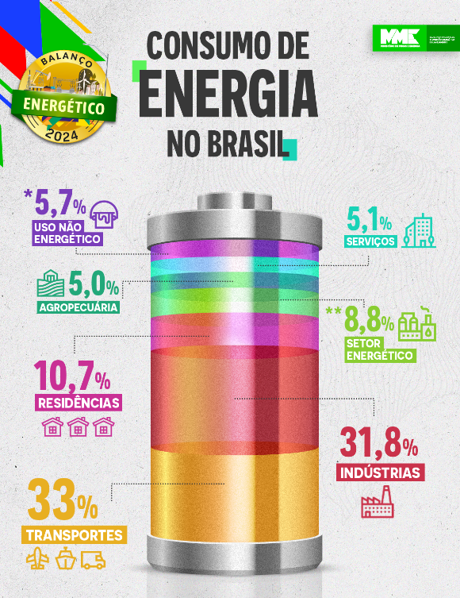
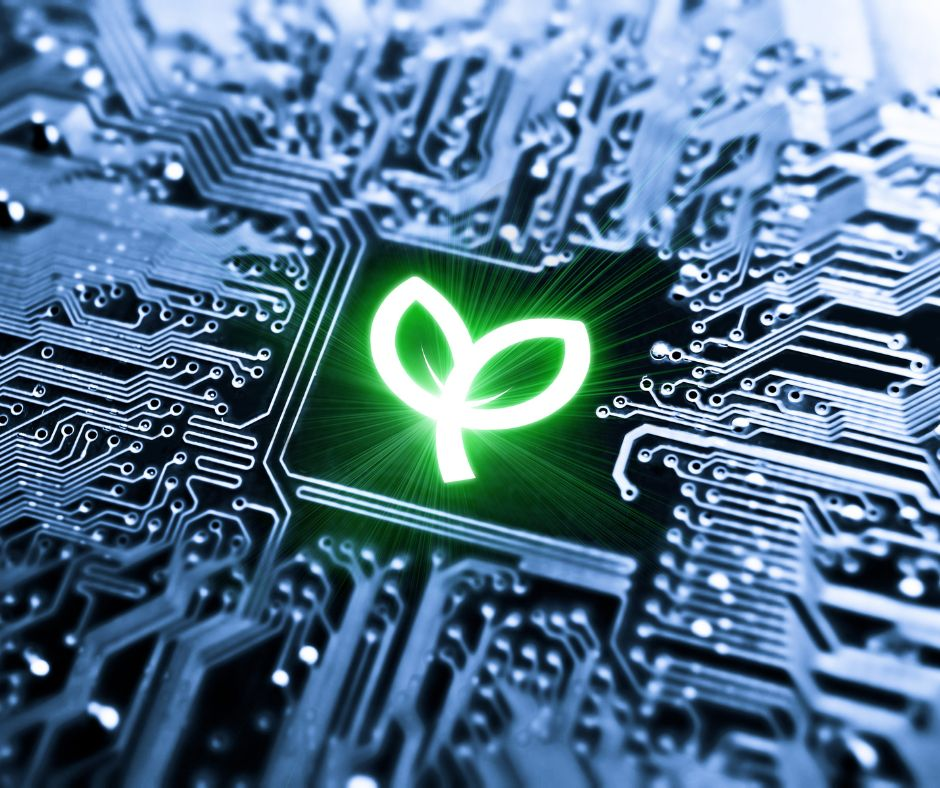

Bem-vindo à EcoWave Tech
Na EcoWave Tech, desenvolvemos soluções tecnológicas que promovem a sustentabilidade e ajudam a reduzir o impacto ambiental. Nosso compromisso é informar, educar e capacitar indivíduos e empresas para que possam tomar decisões conscientes em prol do planeta.

Maiores Consumidores de Energia
Os maiores consumidores de energia no mundo incluem:
- Indústrias: Setores como aço, cimento e química são altamente intensivos em energia.
- Transportes: Carros, aviões e navios dependem fortemente de combustíveis fósseis.
- Residências: Aparelhos de ar-condicionado, aquecedores e eletrodomésticos consomem grandes quantidades de eletricidade.
Entender esses consumidores é crucial para implementar estratégias de redução de consumo e aumentar a eficiência.
Maiores Consumidores de Energia - Países
Os maiores consumidores de energia no mundo incluem:
- China
- Estados Unidos
- Índia
- Rússia
- Japão
- Brasil
Os maiores consumidores de energia elétrica no mundo são a China, os Estados Unidos e a Índia. No Brasil, os setores que mais consomem energia são a indústria, os supermercados, a rede hoteleira, as metalúrgicas, a indústria de plástico, a rede hospitalar, a agricultura e os shoppings.
No Brasil, o consumo médio de energia elétrica em 2022 foi de 2.362 kWh. Em comparação com outros países, o Brasil está abaixo dos Estados Unidos, onde o consumo médio foi de 12.154 kWh, e da China, onde foi de 5.885 kWh. Alguns dos aparelhos elétricos que mais consomem energia são: Ar-condicionado, Aquecedores, Geladeiras e freezers, Chuveiros.
Consumo Consciente
O consumo consciente de energia é uma prática essencial para preservar recursos naturais e reduzir custos. Aqui estão algumas dicas práticas:
- Desligue aparelhos eletrônicos quando não estiverem em uso.
- Troque lâmpadas incandescentes por LED.
- Use equipamentos com selo de eficiência energética.
- Otimize o uso de ar-condicionado, mantendo portas e janelas fechadas.
Green IT e Tecnologias
As tecnologias de Green IT estão revolucionando a maneira como consumimos e gerenciamos energia. Aqui estão algumas inovações:
- Data Centers Eficientes: Infraestruturas projetadas para minimizar o consumo de energia em servidores.
- Monitoramento Inteligente: Sensores IoT que acompanham e otimizam o uso de energia em tempo real.
- Softwares de Gestão: Ferramentas que analisam dados para implementar práticas mais sustentáveis.
Essas soluções ajudam a reduzir custos operacionais e minimizam o impacto ambiental, promovendo um futuro mais verde.
